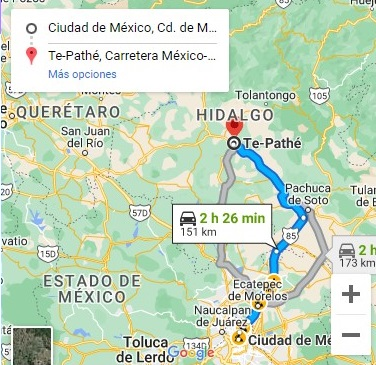

RUTA 1:
Si usted nos visita de la ciudad de México en automóvil, tome la carretera de 4 carriles, al norte de la ciudad de México en Indios Verdes hacia Pachuca, y en la entrada tome la desviación hacia Actopan, continúe hacia Ixmiquilpan, y encontrará su Parque Acuático Te-Pathé, ahora bien si viaja en autobús, lo deberá de abordar en la Central de Autobuses del Norte con destino a Ixmiquilpan, llegando justamente en frente de las instalaciones del parque sin tener que tomar ningún otro transporte texto derecho. Estas son unas notas musicales con texto mas largo appra ver como se acomoda la imagen con espacio entre la imagen y el texto. ubica la imagen a la izquierda y el texto a la derecha con espacio horizontal y vertical alrededor de la imagen de 20 pixeles
